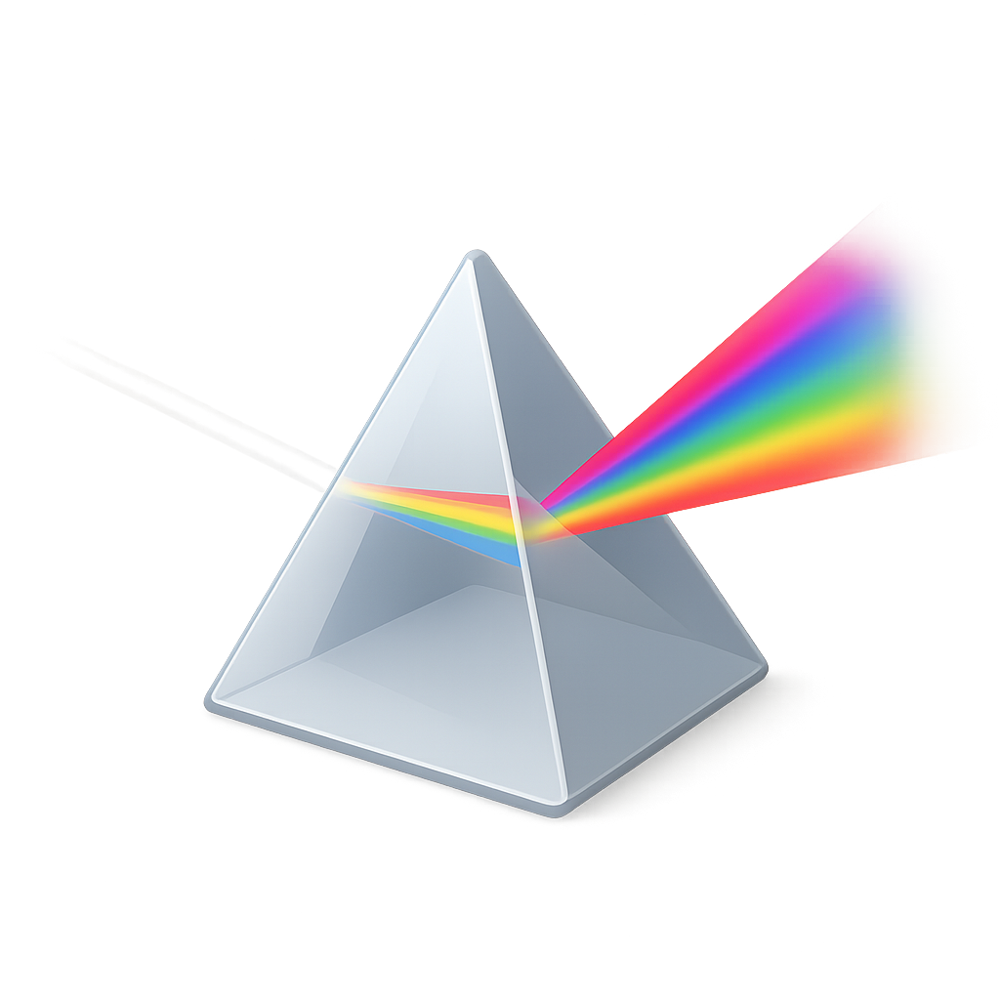
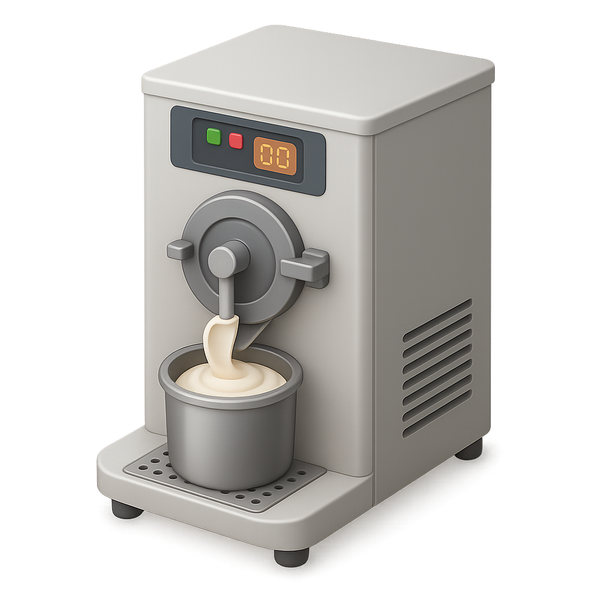
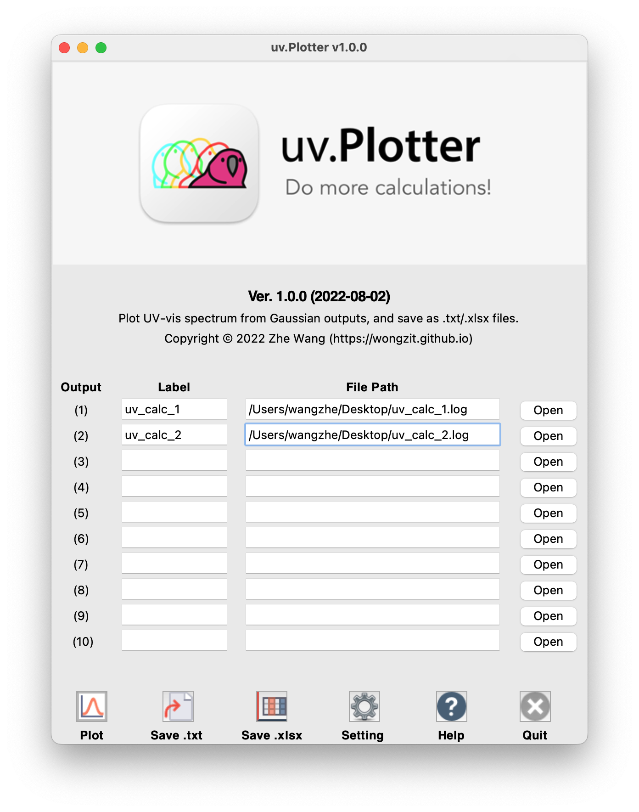
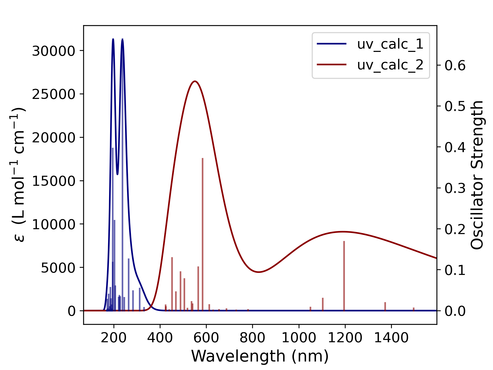
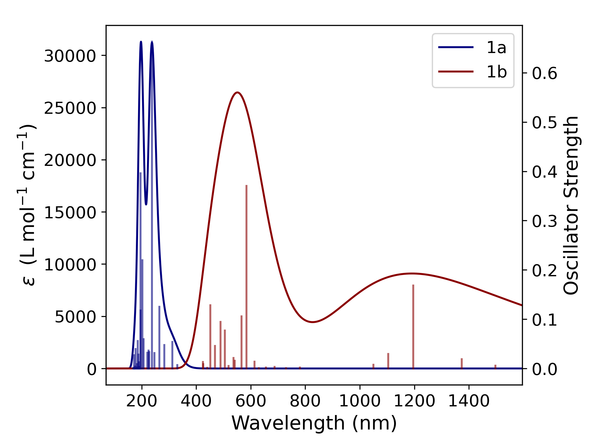
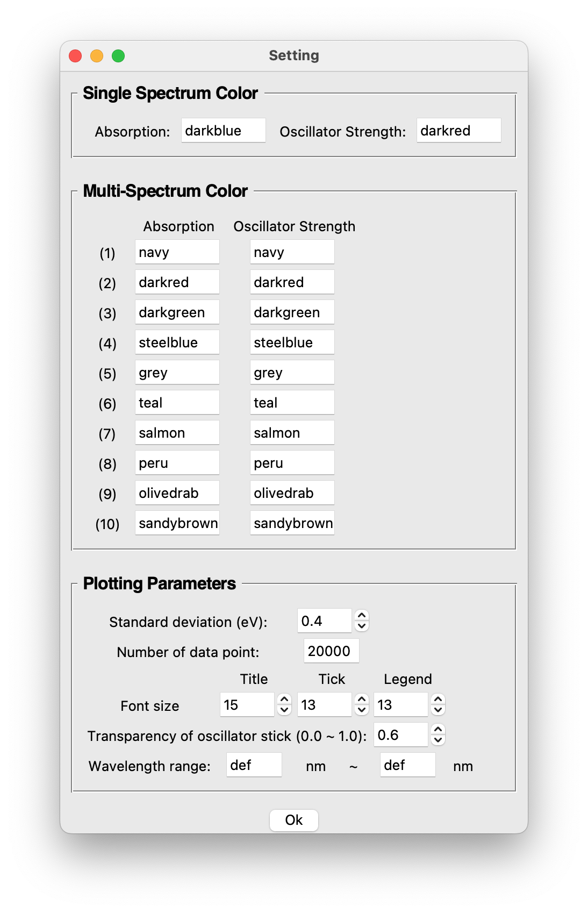

uv.Plotter
Open-source Python software for easily creating UV-vis spectra from Gaussian TD-DFT output files.
Overview
uv.Plotter is an open-source Python program for easily creating UV-vis spectra from Gaussian TD-DFT output file(s). It is freely available on the GitHub page, source code and pre-built executables for macOS and Windows are provided for the latest release.
How it works
uv.Plotter reads Gaussian TD-DFT
calculation from .log or .out file(s), extracts the oscillator
strengths, and computes the absorption curve using Gaussian-type broadening. The underlying
math is described here.


Built with
Install
Run with source code
If a Python IDE is installed, uv.Plotter can be run from source (Python 3.10+ recommended; download from python.org). It depends on the external libraries matplotlib, numpy, openpyxl and Pillow — please make sure these are installed before running.
Run with an executable
Pre-packaged executables for macOS and Windows are available
here.
On macOS, save it in /Applications and launch it from Launchpad. On Windows,
double-click the .exe (keep the assets folder in the same directory as
the .exe).
If a “Cannot open an app from an unidentified developer” warning appears on macOS, go to System Settings → Security & Privacy, click Open Anyway, then Open. After that you can launch it with a double-click.
Usage
The main window is shown below. Open TD-DFT output file(s) with the Open button — up to 10 files at once.

Click the Plot button to draw the UV-vis absorption spectra with the built-in module.

The Label field is useful when plotting more than one output file — it sets the short name of each curve shown in the legend (default: the output file name).

When the spectra window is closed, a .png file is saved in the same directory
as the first output file. The Save .txt and Save .xlsx buttons also export
the plotting data points — the .txt additionally includes the oscillator-strength
data, and the .xlsx embeds a UV-vis absorption spectrum.
Colors and plotting parameters can be changed from the Setting panel. Colors follow matplotlib definitions (see the program's Appendix for the full list).

The default standard deviation is 0.4 eV, matching GaussView. A larger value gives broader peaks; a smaller value gives sharper peaks. To change the plotting range, modify the wavelength range in the Setting window.